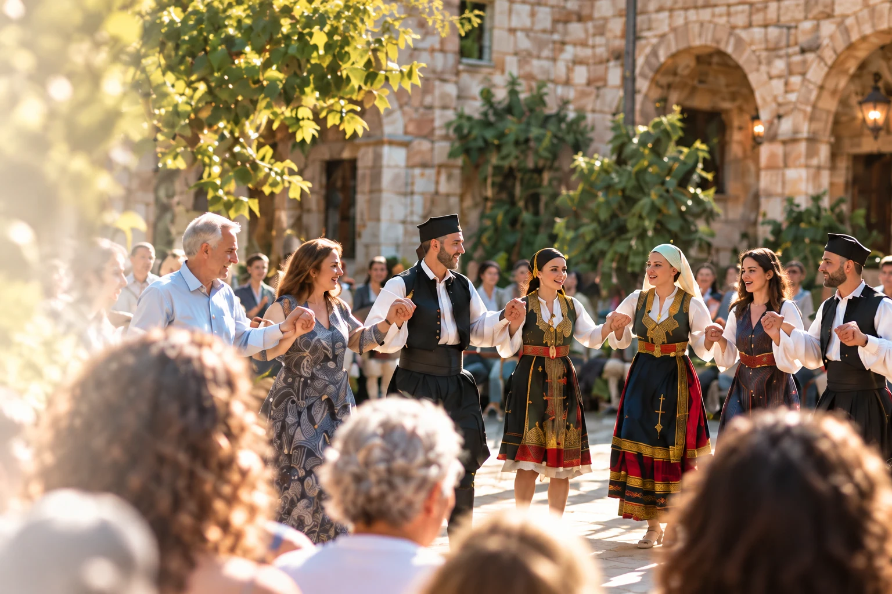
Η ζωή του ΣυνδέσμουΟι στιγμές που
Οι στιγμές που
μας φέρνουν κοντά.
Γιορτές, χοροί και συναντήσεις που γίνονται κοινές αναμνήσεις.
Εξερευνήστε τις εκδηλώσεις ↓Οι επόμενες συναντήσεις μας
Οι νέες ημερομηνίες θα ανακοινώνονται εδώ.
Οι γιορτές που μας ξαναφέρνουν μαζί.
- Ιανουάριος
Κοπή της πίτας
- Φεβρουάριος
Απελευθέρωση Ιωαννίνων
- Οκτώβριος–Νοέμβριος
Επέτειος του ΟΧΙ
- Δεκέμβριος
Ζάλογγο & ετήσιος χορός
Όλο τον χρόνοΤμήματα παραδοσιακού χορού
Το πρόγραμμα κάθε διοργάνωσης ανακοινώνεται χωριστά.
Αρχείο εκδηλώσεων
Ανακοινώσεις, δελτία τύπου και υλικό από τις εκδηλώσεις μας.
Χοροεσπερίδα Ηπειρωτικού Συνδέσμου Πειραιώς
Παραδοσιακό γλέντι
Από την Ήπειρο στη Θράκη
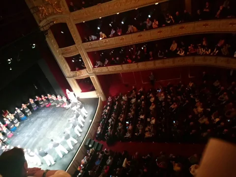
Ήπειρος της αγάπης
Ετήσιος χορός
Ήπειρος της αγάπης
Διαγωνισμός φαγητού
Αρτοκλασία για το Ζάλογγο
Εκδήλωση για την επέτειο του ΟΧΙ
Εορτασμός απελευθέρωσης Ιωαννίνων
100 χρόνια από την απελευθέρωση των Ιωαννίνων
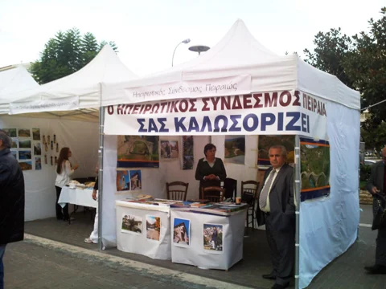
Στιγμές του Συνδέσμου
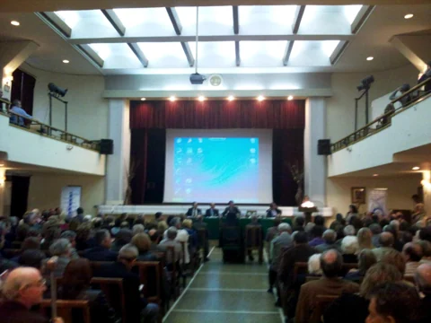
Επιστημονική ημερίδα: Διαβήτης και καρδιά
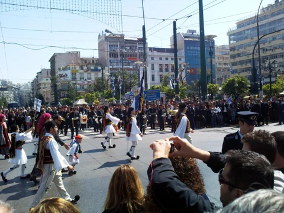
Παρέλαση
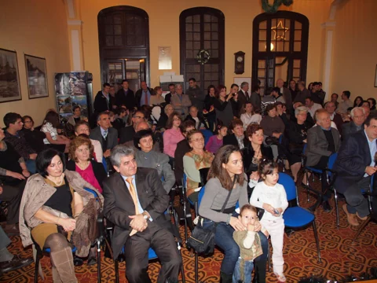
Κοπή πίτας
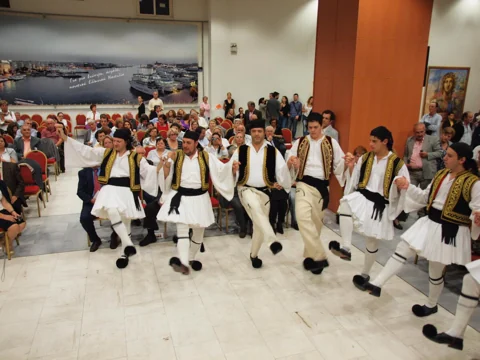
Γυναίκα της Ηπείρου
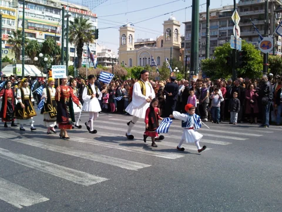
Παρέλαση και κατάθεση στεφάνου
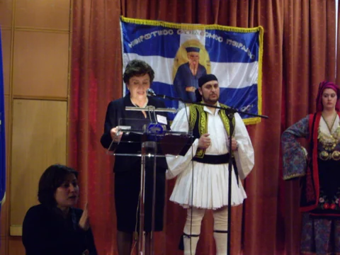
Εορτασμός απελευθέρωσης Ιωαννίνων
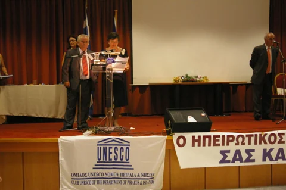
Εκδήλωση με την UNESCO στον ΟΛΠ
Ακόμη περισσότερες στιγμές
από το αρχείο
Φωτογραφίες που δεν έχουν ακόμη συνδεθεί με συγκεκριμένη εκδήλωση.
Βραβεύσεις του Συνδέσμου
Δείτε τις φωτογραφίες →Από το φωτογραφικό αρχείο
Δείτε τις φωτογραφίες →Φωτογραφικό και οπτικοακουστικό υλικό: Ηπειρωτικός Σύνδεσμος Πειραιώς · Αρχική συλλογή φωτογραφιών ↗ · Αρχική συλλογή βίντεο ↗
Ελάτε στην παρέα μας.
Η παράδοση συνεχίζεται με τη συμμετοχή όλων μας.
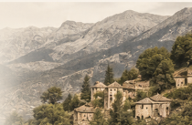